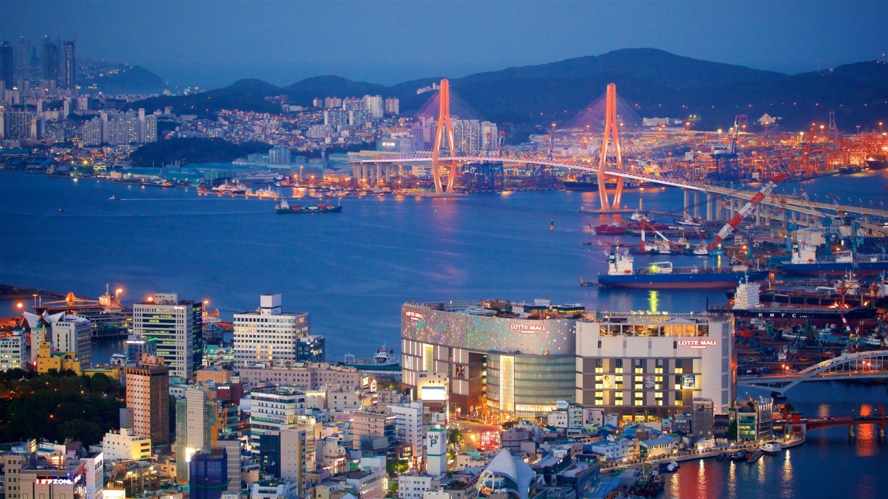
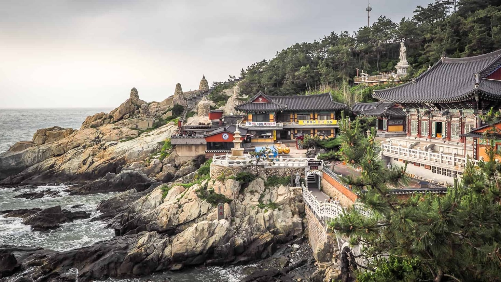
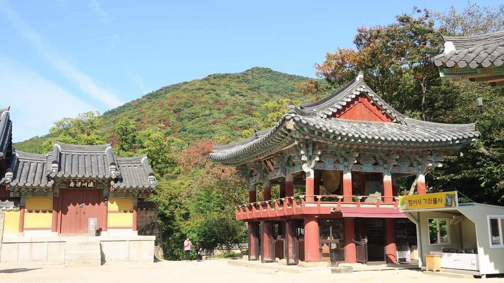
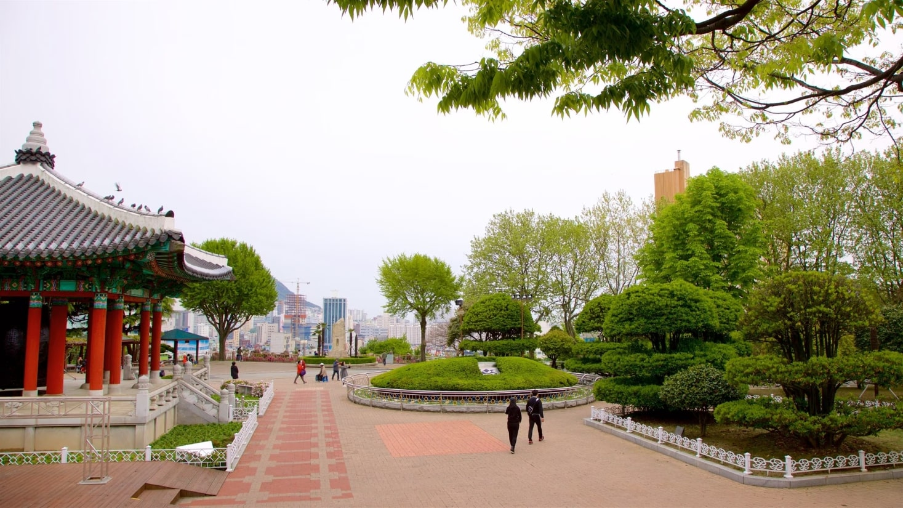

A sua próxima viagem:
Conheça Busan

Busan, a estrela em ascensão da Coreia do Sul, oferece de tudo,
desde churrascarias de topo até bancas tradicionais de comida de rua.
Aqui, exploramos a segunda maior cidade do país e descobrimos
as suas ofertas culinárias.
Para os apreciadores de história
Descubra 3 destinos incontornáveis em Busan
As atrações de Busan variam entre templos budistas centenários,
espalhados pelas montanhas e pela orla marítima, e praias
imaculadas de águas cristalinas. Esta cidade costeira oferece
inúmeras atividades ao longo de todo o ano — as famílias podem
passar algum tempo num aquário à beira-mar, os amantes das compras
podem explorar bairros vibrantes e os apreciadores da natureza
podem desfrutar de longas caminhadas até miradouros panorâmicos.
Os santuários budistas dispersos pela costa e pelas montanhas de
Busan têm uma arquitetura impressionante, capaz de encantar
qualquer fotógrafo.

- Templo Haedong Yonggungsa
O Templo Haedong Yonggungsa é um templo budista localizado no
extremo nordeste de Busan. Construído em 1376, é um dos poucos
templos na Coreia erguido junto ao mar — aqui, pode desfrutar de
vistas do Mar do Leste de um lado e de belas montanhas do outro.

- Templo Beomeo-sa
O Templo Beomeo-sa é um dos maiores santuários da Coreia do Sul.
Está situado no alto da encosta leste da montanha Geumjeongsa, longe
da agitação da cidade. O Daeungjeon Hall do templo é um excelente
exemplo bem preservado da arquitetura da Dinastia Joseon.

- Parque Yongdusan
O Parque Yongdusan, localizado no centro de Busan, alberga
alguns dos monumentos mais importantes da cidade. É possível
desfrutar de vistas espetaculares do topo da Torre de Busan,
com 120 metros de altura. O parque tem 2 museus — explore os
instrumentos musicais tradicionais no Museum of World Folk Instruments
e descubra mais de 80 veleiros coreanos no Exhibition Hall of
World Model Boats.